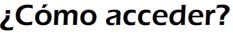

CON TITULO ACADÉMIDO
Requisitos generales de acceso a los Ciclos formativos
Ciclos formativos de grado medio- Estar en posesión del título de Graduado en Educación Secundaria Obligatoria.
- Estar en posesión del título de Técnico Auxiliar.
- Estar en posesión del título de Técnico.
- Haber superado el segundo curso del Bachillerato Unificado y Polivalente.
- Haber superado el segundo curso del primer ciclo experimental de la reforma de las enseñanzas medias.
- Haber superado el tercer curso del plan de estudios de 1963, o segundo curso de comunes experimental de las enseñanzas de Artes Aplicadas y Oficios Artísticos.
- Haber superado otros estudios declarados equivalentes a efectos académicos con algunos de los anteriores.
Ciclos formativos de grado superior
Estar en posesión del título de Bachiller.
- Haber superado el segundo curso de cualquier modalidad de Bachillerato Experimental.
- Haber superado el curso de orientación universitaria o preuniversitario.
- Estar en posesión del título de Técnico Especialista, Técnico Superior o equivalente a efectos académicos.
- Estar en posesión de una titulación universitaria o equivalente.
Para mayor información:
Orden de 14 de mayo de 2007 por la que se desarrolla el procedimiento de admisión del alumnado en la oferta completa y parcial de los ciclos formativos de formación profesional sostenidos con fondos públicos en los centros docentes de la Comunidad Autónoma de Andalucía.
Para más información, pincha aquí.
SIN TITULO ACADÉMICO
Pruebas de acceso
La superación de la prueba de acceso a los ciclos formativos de formación profesional faculta a las personas que no posean los requisitos académicos de acceso para cursar las enseñanzas correspondientes a los ciclos formativos de formación profesional.
- PRUEBA DE ACCESO A CICLOS FORMATIVOS DE GRADO MEDIO
Versará sobre las competencias básicas correspondientes a las enseñanzas de Educación Secundaria Obligatoria , y se estructurará en tres partes: comunicación, social y científico-tecnológica.
Podrán participar aquellas personas que tengan 17 años o los cumplan en el año natural de celebración de la prueba.
- Exenciones:
- De la totalidad de la prueba: aquellas personas que tengan superada la prueba de acceso a la Universidad para mayores de 25 años, así como quienes tengan superada una prueba de acceso a ciclos formativos de grado superior.
- De una parte de la prueba: quienes se encuentren en alguna de estas situaciones:
- Tener superados los módulos obligatorios de un Programa de Cualificación Profesional Inicial.
- Estar en posesión de un certificado de profesionalidad.
- Haber cursado un Programa de Garantía Social y presentar una acreditación de al menos 90 horas de ampliación de conocimientos.
- Acreditar una experiencia laboral en el sector de al menos al equivalente de 1 año con jornada completa.
- PRUEBA DE ACCESO A CICLOS FORMATIVOS DE GRADO SUPERIOR
Tiene como finalidad comprobar la madurez en relación con los objetivos del bachillerato y sus capacidades referentes al campo profesional de que se trate.
Podrán participar aquellas personas que tengan 19 años de edad o los cumplan en el año natural de celebración de la prueba, así como aquellos que tengan 18 años y posean un título de Técnico relacionado con aquel al que se desea acceder.
- Exenciones:
- De la totalidad de la prueba: aquellas personas que tengan superada la prueba de acceso a la Universidad para mayores de 25 años.
- De una parte de la prueba: quienes se encuentren en alguna de estas situaciones:
- Estar en posesión de un título de Técnico relacionado con aquél al que se desea acceder.
- Estar en posesión de un certificado de profesionalidad de alguna de las familias profesionales incluidas en la opción del ciclo por el que se presenta, de un nivel competencial dos o superior.
- Acreditar una experiencia laboral en el sector de al menos al equivalente de 1 año con jornada completa.